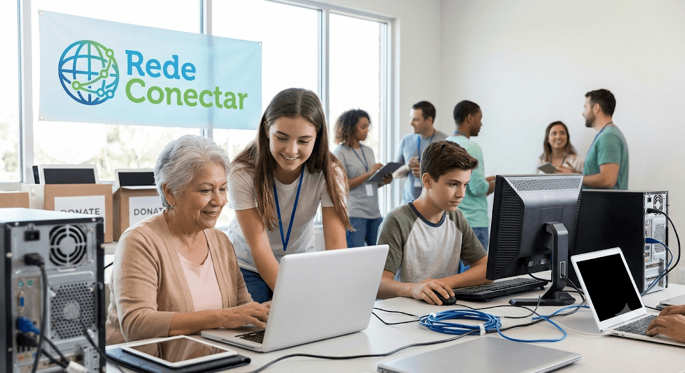

Quem Somos e o Nosso Propósito

A Rede Conectar é uma organização sem fins lucrativos dedicada a combater a desigualdade através da tecnologia.
Acreditamos que o acesso ao mundo digital não é um luxo, mas um direito fundamental para o desenvolvimento pessoal, educacional e profissional de cada indivíduo.
Nosso objetivo é transformar vidas, aproximando quem precisa de tecnologia de quem faz a diferença. Através do recolhimento, restauração e doação de computadores e
dispositivos eletrônicos, garantimos que estudantes e famílias em vulnerabilidade social ganhem as ferramentas necessárias para estudar, trabalhar e
se conectar com o futuro.
Como Atuamos
Nossa atuação é baseada em três pilares fundamentais, que conectam solidariedade, tecnologia e educação para gerar um impacto social real e sustentável
nas comunidades que atendemos.
- Arrecadação e Recuperação de Equipamentos: Recebemos computadores, notebooks e celulares doados por pessoas e empresas, realizando a manutenção
necessária para deixá-los prontos para uso.
- Doação e Inclusão Digital: Entregamos os dispositivos recuperados para alunos, famílias e projetos comunitários em situação de vulnerabilidade,
garantindo o acesso à internet e ao aprendizado.
- Capacitação e Oficinas: Oferecemos treinamentos básicos de informática e uso consciente da tecnologia para que os beneficiários utilizem os recursos
digitais no estudo e na busca por empregos.
Nossos Projetos
Desenvolvemos iniciativas práticas focadas em transformar equipamentos parados em oportunidades reais de aprendizado, trabalho e inclusão social
Computador para Todos
Projeto focado na coleta, formatação e recuperação de computadores descartados por empresas e pessoas físicas. Após a manutenção, os equipamentos são
doados para estudantes de escolas públicas que não possuem recursos para comprar uma máquina própia.
Conexão na Periferia
Estruturação de pontos de acesso comunitários à internet e minilabs digitais em centros sociais. A iniciativa garante infraestrutura e conexão
estável para que moradores da região possam realizar pesquisas, estudos e serviços online.
Primeiro Click
Oficinas presenciais de alfabetização digital voltadas para jovens e idosos. Os alunos aprendem desde o manuseio básico de computadores e navegação
segura, até a elaboração de currículos e uso de ferramentas úteis para o mercado de trabalho.
Faça Parte da Mudança
Sua ajuda é o combustível que nos permite levar tecnologia e conhecimento para quem mais precisa. Seja doando um equipamento que você não usa mais,
oferecendo seu tempo como voluntário ou contribuindo financeiramente, você faz a diferença direta na vida de diversas famílias.
Quero Participar
Conheça Nossos Projetos
Dados de Contato
Estes são os nossos canais oficiais de comunicação. Entre em contato para tirar dúvidas, agendar a entrega de doações de equipamentos
ou saber mais sobre como se tornar um voluntário dos nossos projetos.
E-mail: contato@redeconectar.org.br
Telefone: (11) 99999-0000
Endereço: Av. da Tecnologia, 1020, Sala 405 - Centro, São Paulo - SP
Horário de Atendimento: Segunda a sexta-feira, das 09h às 18h